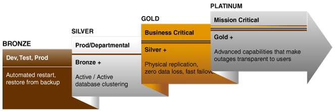

2 High Availability and Data Protection – Getting From Requirements to Architecture
This chapter provides a framework to effectively evaluate the high availability requirements of an enterprise. It contains the following sections:
Topics:
2.1 High Availability Requirements
Any effort to design and implement a high availability strategy for Oracle Database begins by performing a thorough business impact analysis to identify the consequences to the enterprise of downtime and data loss, whether caused by unplanned or planned outages. The term "business impact" is intended to be agnostic of whether the enterprise is a commercial venture, government agency, or not-for-profit institution. In all cases, data loss and downtime can seriously impact the ability of any enterprise to perform its function. Implementing high availability may involve critical tasks such as:
-
Retiring legacy systems
-
Investing in more capable and robust systems and facilities
-
Redesigning the overall IT architecture and operations to adapt to this high availability model
-
Modifying existing applications to take full advantage of high availability infrastructures
-
Redesigning business processes
-
Hiring and training personnel
-
Moving parts or an entire application or database into the Oracle Public Cloud
-
Balancing the right level of consolidation, flexibility, and isolation
-
Understanding the capabilities and limitations of your existing system and network infrastructure
By combining your business analysis with an understanding of the level of investment required to implement different high availability solutions, you can develop a high availability architecture that achieves both business and technical objectives.
Figure 2-1 Planning and Implementing a Highly Available Enterprise
2.2 A Methodology for Documenting High Availability Requirements
The elements of this analysis framework are:
Topics:
2.2.1 Business Impact Analysis
A rigorous business impact analysis:
-
Identifies the critical business processes in an organization
-
Calculates the quantifiable loss risk for unplanned and planned IT outages affecting each of these business processes
-
Outlines the effects of these outages
-
Considers essential business functions, people and system resources, government regulations, and internal and external business dependencies
-
Is based on objective and subjective data gathered from interviews with knowledgeable and experienced personnel
-
Reviews business practice histories, financial reports, IT systems logs, and so on
The business impact analysis categorizes the business processes based on the severity of the impact of IT-related outages. For example, consider a semiconductor manufacturer with chip fabrication plants located worldwide. Semiconductor manufacturing is an intensely competitive business requiring a huge financial investment that is amortized over high production volumes. The human resource applications used by plant administration are unlikely to be considered as mission-critical as the applications that control the manufacturing process in the plant. Failure of the applications that support manufacturing affects production levels and have a direct impact on the financial results of the company.
Similarly, an internal knowledge management system is likely to be considered mission-critical for a management consulting firm, because the business of a client-focused company is based on internal research accessibility for its consultants and knowledge workers. The cost of downtime of such a system is extremely high for this business.
2.2.2 Cost of Downtime
A complete business impact analysis provides the insight needed to quantify the cost of unplanned and planned downtime. Understanding this cost is essential because it helps prioritize your high availability investment and directly influences the high availability technologies that you choose to minimize the downtime risk.
Various reports have been published, documenting the costs of downtime in different industries. Examples include costs that range from millions of dollars for each hour of brokerage operations and credit card sales, to tens of thousands of dollars for each hour of package shipping services.
These numbers are staggering. The Internet can connect the business directly to millions of customers. Application downtime can disrupt this connection, cutting off a business from its customers. In addition to lost revenue, downtime can negatively affect customer relationships, competitive advantages, legal obligations, industry reputation, and shareholder confidence.
2.2.3 Recovery Time Objective
The business impact analysis determines your tolerance to downtime, also known as recovery time objective (RTO). An RTO is defined as the maximum amount of time that an IT-based business process can be down before the organization starts suffering unacceptable consequences (financial losses, customer dissatisfaction, reputation, and so on). RTO indicates the downtime tolerance of a business process or an organization in general.
The RTO requirements are driven by the mission-critical nature of the business. Thus, for a system running a stock exchange, the RTO is zero or near to zero.
An organization is likely to have varying RTO requirements across its various business processes. Thus, for a high volume e-commerce website, for which there is an expectation of rapid response times and for which customer switching costs are very low, the web-based customer interaction system that drives e-commerce sales is likely to have an RTO of zero or close to zero. However, the RTO of the systems that support back-end operations, such as shipping and billing, can be higher. If these back-end systems are down, then the business may resort to manual operations temporarily without a significant visible impact.
The ability to take orders through the e-commerce website immediately (the RTO) may be more important than the RPO, because lost data can be reloaded later.
2.2.4 Recovery Point Objective
The business impact analysis also determines your tolerance to data loss, also known as recovery point objective (RPO). RPO is the maximum amount of data that an IT-based business process can lose without harm to the organization. RPO measures the data-loss tolerance of a business process or an organization in general. This data loss is often measured in terms of time, for example, zero, seconds, hours, or days of data loss.
A stock exchange where millions of dollars worth of transactions occur every minute cannot afford to lose any data. Thus, its RPO must be zero. The web-based sales system in the e-commerce example does not require an RPO of zero, although a low RPO is essential for customer satisfaction. However, its back-end merchandising and inventory update system can have a higher RPO because lost data can be reentered.
2.2.5 Manageability Goal
A manageability goal is more subjective than either the RPO or the RTO. It results from an objective evaluation of the skill sets, management resources, and tools available in an organization and the degree to which the organization can successfully manage all elements of a high availability architecture. Just as RPO and RTO measure an organization's tolerance for downtime or data loss, your manageability goal measures the organization's tolerance for complexity in the IT environment. When less complexity is a requirement, simpler methods of achieving high availability are preferred over methods that may be more complex to manage, even if the latter could attain more aggressive RTO and RPO objectives. Understanding manageability goals helps organizations differentiate between what is possible and what is practical to implement.
2.2.6 Total Cost of Ownership and Return on Investment
Understanding total cost of ownership (TCO) and objectives for return on investment (ROI) are essential to selecting a high availability architecture that also achieves the business goals of your organization. TCO includes all costs (such as acquisition, implementation, systems, networks, facilities, staff, training, and support), over the useful life of the solution chosen. Likewise, the ROI calculation captures all of the financial benefits that accrue to a given high availability architecture.
For example, consider a high availability architecture in which IT systems and storage at a remote standby site remain idle with no other business use that can be served by the standby systems. The only return on investment for the standby site is the costs related to downtime avoided by its use in a failover scenario. Contrast this with a different high availability architecture that enables IT systems and storage at the standby site to be used productively while in the standby role (for example, for reports or for off-loading the primary system of the overhead of user queries or distributing read-write workload). The return on investment of such an architecture includes both the cost of downtime avoided and the financial benefits that accrue to its productive use while it also provides for high availability and data protection.
2.3 Mapping Requirements to Architectures
The business impact analysis will document what you already know. Different applications and the databases that support them represent varying degrees of importance to the enterprise. A high level of investment in high availability infrastructure may not make sense for an application that if down, would not have an immediate impact on the enterprise. So where do you start?
The outcome of the business impact analysis enables databases within an enterprise to be grouped together with other databases having similar RTO and RPO objectives. The groups can then be mapped to a controlled set of high availability reference architectures that most closely addresses the required service levels. Note that in the case where there are dependencies between databases, they are grouped with the database having the most stringent high availability requirement.
Topics:
- Oracle MAA Reference Architectures
Oracle MAA best practices define high availability reference architectures that address the complete range of availability and data protection required by enterprises of all sizes and lines of business. - Bronze Reference Architecture
- Silver Reference Architecture
- Gold Reference Architecture
- Platinum Reference Architecture
- Oracle Sharding MAA Reference Architecture
Oracle Sharding distributes data and workloads across a pool of independent databases (shards) that are presented to the application as a single logical database, also known as a sharded database. - High Availability and Data Protection Attributes by Tier
2.3.1 Oracle MAA Reference Architectures
Oracle MAA best practices define high availability reference architectures that address the complete range of availability and data protection required by enterprises of all sizes and lines of business.
The Platinum, Gold, Silver, and Bronze MAA reference architectures, or tiers, are applicable to on-premise, private and public cloud configurations, and hybrid cloud. They deliver the service levels described in the following figure.
Figure 2-2 Oracle MAA Reference Architectures
Description of "Figure 2-2 Oracle MAA Reference Architectures"
Each tier uses a different MAA reference architecture to deploy the optimal set of Oracle high availability capabilities that reliably achieve a given service level at the lowest cost and complexity. The tiers explicitly address all types of unplanned outages including data corruption, component failure, and system and site outages, as well as planned outages due to maintenance, migrations, or other purposes.
The Oracle Sharding reference architecture uses these same standard Bronze, Silver, Gold, and Platinum reference architectures as building blocks to provide shard-level high availability, given that each shard is a standalone Oracle Database. The Oracle Sharding reference architecture also includes best practices that address any unique considerations for a sharded database.
Container databases (CDBs) using Oracle Multitenant can exist in any tier, Bronze through Platinum, providing higher consolidation density and higher TCO. Typically, the consolidation density is higher with Bronze and Silver tiers, and there is less or zero consolidation when deploying a Platinum tier.
Oracle Database In-Memory can also be leveraged in any of the MAA tiers. Because the In-Memory column store is seamlessly integrated into Oracle Database, all of the high availability benefits that come from the MAA tiers are inherited when implementing Oracle Database In-Memory.
Oracle Engineered Systems can also exist in any of the tiers. Integrating Zero Data Loss Recovery Appliance (Recovery Appliance) as the Oracle Database backup solution for your entire data center reduces RPO and RTO when restoring from backups. Leveraging Oracle Exadata Database Machine as your database platform in the MAA reference architectures provide the best database platform solution with the lowest RTO and brownout.
See Also:
Introduction to MAA Reference Architectures
http://www.oracle.com/goto/maa for MAA white paper “Oracle Database In-Memory High Availability Best Practices”
2.3.2 Bronze Reference Architecture
The Bronze tier is appropriate for databases where simple restart or restore from backup is "HA enough." The Bronze tier is based upon a single instance Oracle Database with MAA best practices that use the many capabilities for data protection and high availability included with every Oracle Enterprise Edition license. Oracle-optimized backups using Oracle Recovery Manager (RMAN) provide data protection and are used to restore availability should an outage prevent the database from restarting.
2.3.3 Silver Reference Architecture
The Silver tier provides an additional level of high availability for databases that require minimal or zero downtime in the event of database instance or server failure, as well as many types of planned maintenance. The Silver tier adds clustering technology – either Oracle RAC or Oracle RAC One Node. RMAN provides database-optimized backups to protect data and restore availability should an outage prevent the cluster from restarting.
2.3.4 Gold Reference Architecture
The Gold tier raises the stakes substantially for business critical applications that cannot accept vulnerability to single points-of-failure. This tier adds database-aware replication technologies, Oracle Active Data Guard and Oracle GoldenGate, which synchronize one or more replicas of the production database to provide real time data protection and availability. Database-aware replication substantially enhances high availability and data protection beyond what is possible with storage replication technologies. It also reduces cost while improving return on investment by actively utilizing all replicas at all times.
2.3.5 Platinum Reference Architecture
The Platinum tier introduces several new Oracle Database 12c capabilities and previously available products that have been enhanced with the latest release. These capabilities include Application Continuity, for reliable replay of in-flight transactions that masks outages from users; Oracle Active Data Guard Far Sync, for zero data loss protection at any distance; Oracle GoldenGate enhancements for zero downtime upgrades and migrations; and Global Data Services for automated service management and workload balancing in replicated database environments. Each of these technologies requires additional effort to implement, but they deliver substantial value for the most critical applications where downtime and data loss are not an option.
2.3.6 Oracle Sharding MAA Reference Architecture
Oracle Sharding distributes data and workloads across a pool of independent databases (shards) that are presented to the application as a single logical database, also known as a sharded database.
A sharded database is used to provide linear scalability and fault isolation for suitable applications. A sharded database eliminates the possibility of a single physical database being unable to scale to meet application requirements. Similarly, a sharded database prevents a physical database from being a single point of failure for an application due to unplanned outages or planned maintenance.
The Oracle Sharding reference architecture uses the standard Bronze, Silver, Gold, and Platinum reference architectures as building blocks to provide shard-level high availability given that each shard is a standalone Oracle Database. The Oracle Sharding reference architecture also includes best practices that address any unique considerations for a sharded database.
2.3.7 High Availability and Data Protection Attributes by Tier
Table 2-1 summarizes the high availability and data protection attributes inherent to each tier. Each tier includes all of the capabilities of the previous tier and builds upon the architecture to handle an expanded fault domain. The various components included and the service levels achieved by each architecture are described in other topics.
Table 2-1 High Availability and Data Protection Attributes by Tier
| Outage Class/HA Tier | Unplanned Outages (Local Site) | Planned Maintenance | Data Protection | Unrecoverable Local Outages and Disaster Recovery |
|---|---|---|---|---|
|
Platinum |
Zero application outage for Platinum ready applications |
Zero application outage |
Comprehensive runtime validation combined with manual checks |
Zero application outage for Platinum ready applications, in-flight transactions are preserved, zero data loss |
|
Gold |
Comprehensive HA and DR |
All rolling or online |
Comprehensive runtime validation combined with manual checks |
Real-time failover, zero or near-zero data loss |
|
Silver |
HA with automatic failover |
Some rolling, some online, some offline |
Basic runtime validation combined with manual checks |
Restore from backup, potential to lose data generated since last backup. If the Recovery Appliance is present for both silver and bronze, potential to lose data is zero or near zero.. |
|
Bronze |
Single Instance, Auto restart for recoverable instance and server failures |
Some online, most off-line |
Basic runtime validation combined with manual checks |
Restore from backup, potential to lose data generated since last backup |
|
Oracle Sharding |
Failure impact isolated to the shard enabling highest application availability. For each shard failure, very low application brownout or zero application outage for Platinum Ready applications. |
Planned maintenance impact isolated to the shard enabling highest application availability. For shard maintenance, all rolling or online or zero application outage |
Each shard is isolated. Each shard has comprehensive runtime validation combined with manual checks |
For site failure, impact on application is dependent on active shards in failed site vs. total number of active shards. Each shard can be configured with real time failover, zero or near zero data loss, or zero application outage for Platinum ready applications, in-flight transactions are preserved, zero data loss |